Beekeeping
Introduction
Beekeeping in Africa has been practised from time immemorial. The traditional beekeepers use simple hives often made from hollowed logs. The empty hives are placed high up on trees, become occupied by passing swarms and in due course are harvested by the beekeepers. This method of honey harvesting may destroy the colony and and result in a poor yield of low quality hive products. In organic agriculture this is not viewed as fair to the animals and should therefore be avoided. Fortunately, hives and methods of bee-keeping have improved with time which allows harvesting without destroying the bees. It is important to keep in mind that bees are not only honey providers: they are living individuals and pollinators, which are very crucial to our production of food in general. On a global scale, a third of our food is dependent on pollination, and bees are very important for this.
What are the benefits of bee keeping?
Bee farming has many benefits. It has the following advantages over other farm enterprises:
- Bees are essential pollinators of plants thus playing a big role in biodiversity and improvements of crop yields. This is particularly valued in organic farming
- Requires little land
- Cost is low compared to other farm enterprises
- Does not interfere with other agricultural enterprises in terms of resources
- Labour required is low
- Many products can be manufactured for supplementary income
- Encourages environmental conservation
- Most hive products have a therapeutic value
Bees in Organic Agriculture
There are two major aspects to remember when considering the role of bees in organic agriculture: the role in the whole ecosystem and the animal welfare aspects.
An organic agricultural system is dependent on natural processes. Pollination and the interaction between the different plants and the insects are crucial for the well-being of the ecosystem. The diversity in the system gives bees the best possibilities for a fair living, as opposed to a mono-cultural system where flowers are only available in a very limited time during the year.
Animal welfare aspects in organic agriculture live up to the organic principles of ecology, health, fairness and care. This also is crucial to the bees. One of the fascinating and interesting thing about bees is that they are individuals, but together they form a colony which can almost be regarded as "the organism". It is not fair to the organism to split it in violent ways. in some cases, it can be a long term strategy to replace a queen, or to divide a hive, but mostly the natural processes in the colony will guide what the bees do in terms of swarming and establishing colonies. This is the gentle, care that we can give the bees, when we as humans take them into our households and live from their products: give them the best living conditions, and let them guide and choose as much as possible. The following issues related to bee welfare can therefore be emphasised:
- Bees have a unique way of communicating and navigating, and it is not fair to them to move them over large distances. Like all animals, a stable life in surroundings where they can navigate and build up resistance and abilities to manoeuvre in these particular surroundings, is the most fair and healthy way to keep them. If the surroundings are not favourable for them, they will move themselves.
- Health is also connected to stability. The massive migration of bee colonies seen in the agriculture-industry in some countries seems to be a very efficient way of exchanging diseases. The massive bee death problem seen in USA and parts of Europe is multifactorial, but strongly linked to the way in which bee colonies are violated, divided and moved around.
- African bees are regarded as some of the most disease resistant and strongest bee races - keep them and maintain them well in Africa, and do not import bees based on arguments that other bee races can be more efficient.
- Sometimes, the healthy honey of the bees is replaced purely by cheap and less healthy sugar. As organic bee keeper, it is fair to consider that bees should keep some of the honey, and/or honey can be harvested when there are still plenty of possibilities for the bees to take and make comb and honey.
See also: Animal health promotion and disease prevention according to IFOAM norms
The bee colony
The bee colony is a fascinating organism of living insects, up to 50-60'000 individual bees. There are 3 different kinds of bees in every colony: a queen, drones (male bees) and workers.
 Honeybee castes in a colony. Illustration. (c) icipe / Biovision |
 Queen bee (c) Biovision/icipe
|
Queen. The queen has a long and slender abdomen, with wings covering about 1/4 of the entire abdomen and 2 large ovaries and the spermatheca (sac-like structure for sperm storage) housed in the abdomen.
Her function is to;
- Mate
- Lay eggs for the rest of her life, in peak times up to 2000 per day in her 1-4 year long life. This is more than the weight of the queen. The larvae hatching from these eggs develop into workers, queens or drones depending on specific conditions.
- To produce chemical substances called pheromones that keep the colony cohesive
 Drone (c) icipe / Biovision
|
Drones. Drones are the male honeybees and develop from unfertilised eggs. They are larger than workers with large eyes which cover practically the whole head and have a blunt abdomen covered with a tuft of small hairs. Drones fly with a loud buzzing sound and are larger than other bees, and this together make them very scary, however, they lack the sting. They do not collect pollen or nectar, and are unable to produce wax. Drones lack work related structures and their sole function is to fertilise the queens. They are fed by worker bees.
In times when resources are scarce in the bee hive, drones are chased from the hive. They will usually die off as they cannot feed themselves. Drones normally have a life span of 60 days, and they die minutes after mating the queen as they loose "vital parts" of the abdomen in the process.
 Worker bee (c) icipe / Biovision
|
Workers. Workers are the smallest in size and majority in the colony and develop from fertilized eggs. Here, the feeding of the larvae with royal jelly, a glandular secretion of the workers, is the decisive factor. Fertilised larvae up to three days old can be changed to queens by feeding royal jelly to them. If they are not fed with royal jelly, the larvae will become worker bees. Workers cannot mate or store semen. However in abnormal colony conditions they can lay unfertilised eggs which develop into drones (male bees). Laying workers is a sign that a colony has become queenless for a long period of time.
The worker bees make up about 95% of the colony and they do almost all the work: Older workers bring in nectar, pollen, water, and propolis (bee glue) to the hive. Their hind legs are specially equipped for this task with the so called pollen baskets. The oldest bees guard the hive entrance. Their sting is a powerful weapon. If used against a human the bee usually looses the sting and dies. This will not happen when stinging another bee. Younger bees tend to perform duties inside the hive. Very important is the feeding and cleaning of the queen. Other duties are: cleaning the hive, building wax combs, feeding the young and or controlling the temperature of the brood area. For this duty workers eat honey to produce heat in cold weather. Bringing water inside the hive and fanning with their wings will keep the hive cool in hot weather.
Organisation of the bee hive
Producing the comb
A honey bee nest consists of a series of parallel beeswax combs. Each comb consists of hexagonal cells, which function as containers for honey, pollen or developing bee larvae (brood). If enough nectar is available young worker bees will produce the needed wax with 8 glands situated on the abdomen (belly). The combs are evenly spaced and are attached to the ceiling and the walls of the nest. The space between the faces of the combs is known as 'bee space'. In natural nests it is usually 6-8 mm. This is critical and gives the bees enough space to walk and work on the surfaces of the combs. Depending on the type of the honey bee, the bee space, the dimensions of the individual cells as well as the size of the nest will vary. The bee space is a crucial factor in the use of bee equipment and honey bees cannot be managed efficiently using equipment of inappropriate size.
African Bees: Honey Bees and Stingless Bees
1. Honey Bees in Kenya
There are many different species of bees in the world most of them solitary (living alone). A few species of bees are kept for pollination and honey production. In Kenya the most important species is called the honeybee or Apis mellifera. This is the species of bee that is familiar to everyone. It is this species of bee that this book is about. Within this species there are a number of races of bees in Kenya which have their own particular characteristics. We have Apis mellifera scutellata, Apis mellifera monticola, Apis mellifera yeminitica (nubica) and Apis mellifera littorea.
Apis mellifera yemenitica (formally A. m. nubica)
This is the smallest race in Africa. It has the most slender abdomen and the largest yellow abdominal colour band of all African races. It commonly withstands and survives drought conditions by frequent migration. It is mostly found in the northern parts of Kenya.
|
|

{kind=link}
{kind=link}
{kind=link}
{kind=link}
{kind=link}
{kind=link}
Apis mellifera scutellata
Bees from the savannahs of central and equatorial East Africa. This is the species that was introduced to South America and became infamously known as the "killer bee". This is a small bee with a short tongue which is highly aggressive and swarms frequently and is able to nest in a broad range of sites from cavities to open places. It is found in plains and their high reproductive rate is attributed to massive flowering, which occurs in the plains just after the rains.
Apis mellifera littorea
This bee inhabits the low lands of the Kenya Coast. It does not migrate as much as scutellata. It has a tendency to rear brood throughout the year due to availability of forage along the coast.
Apis mellifers monticola
This bee is called the mountain bee and is found at high altitudes in Tanzania and Kenya - 1,500 - 3,100 meters. The bee inhabits places where the sun is frequently obscured by clouds and mist and ground frosts can occur at night. It is the largest bee in Africa. It has a tendency to reduce brood rearing at the first sign of forage decline and may not migrate. It is less productive and less vicious. It is found in Meru and Mt. Elgon. (Source National Beekeeping Station, Nairobi).
2. Honeybees from other countries in Africa
Apis mellifera intermissa
This is a North African race of honeybee found north of the Sahara from Libya to Morocco. The bee is reputedly very aggressive and swarms frequently. During droughts over 80% of colonies may die but owing to intensive swarming colony numbers increase when conditions improve.
Apis mellifera lamarckii
Egyptian bees found in North East Africa primarily in Egypt and the Sudan along the Nile Valley. Like intermissa they rear numerous queens with one colony recorded as rearing 368 queen cells and producing one small swarm with 30 queens!
Apis mellifera adansonii
These bees are found in West Africa and are yellow in colour. They appear to be very similar to scutellata in many of their behaviours.
Apis mellifera capensis
These bees are found in South Africa and are unique among Apis mellifera in that they have a common occurance of female-producing laying workers.
3. Stingless Honeybees
There are also species of stingless bees in Kenya. These bees also produce honey which is prized as a medicine. Stingless bees can be kept in small hives but are not kept commercially in Kenya at the moment. However there has been renewed interest in these bees recently with the discovery of new species in Kakamega by a scientist working for the National Museums of Kenya.
Note: This article on African races of bees and their behaviour will be developed over time to include more detailed information on specific African bee races. An understanding of the type of bees we have in Africa and their behaviour is fundamental to good beekeeping.
Bee Hives
A hive is the box or some other container where bees live. In Kenya there are three types of hives:
- Traditional Hives
- Kenya Top Bar Hives (KTBH)
- Frame hives
Traditional Hives (Log Hives)
Log hives and other traditional hives contribute to about 80% of Kenya's honey production. They are estimated to number almost 1.5 million countrywide, and provide a livelihood to many especially in arid and semi-arid lands. Log hives are cheap but difficult to harvest.
Traditional hives are largely considered as no more than man-made cavities in which bees live. They come in all forms as hollowed-out logs, discarded metal cans or drums, clay pots, wooden boxes, baskets of straw, bamboo and many others. Honeybees attach combs directly on the upper surfaces of the hive and usually to the sides.
| 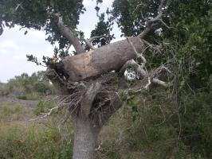 |
| Log hive from Tana River, Kenya |
| (c) A. Bruntse, Biovision
|
Advantages
- Materials for construction are readily available and are cheap in most cases free
- Beeswax and propolis production is relatively high
- Traditional hives and methods of working with them are established
Disadvantages
- It is impossible to remove or replace combs. This makes examination and harvesting difficult.
- Swarming is often common due to limited space.
- Brood is often lost during harvesting.
- Honey production is limited.
- Honey quality is usually low (mixed with pollen, brood and ashes).
- Many adult bees are usually killed during harvesting. This must absolutely be regarded as critical in organic agriculture, as it is very unfair to the bees.
- There is usually a lot of colony disturbance during harvesting which in most cases causes absconding. This is - like above - very unfair to the bees, and therefore not recommendable in an organic farm.
Kenya Top Bar Hives (KTBH)
Usually the bees attach their combs to the bars but not to the side of the hive, since the walls are slanted at an angle of at least 14deg. This allows lifting out of the combs for examination. The bees attach their combs to the bars which can be lifted out of the hive for examination.
In Kenya, the Kenya Top Bar hive was designed and adopted in 1971. Other hives, such the modified African Long Hive and the Langstroth Hive, have since been introduced. However, the Kenya Top Bar Hive remains the most dominant and most widely used due to its simplicity, affordable price and advantages.
| 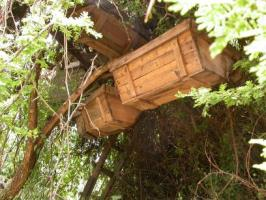 |
| Kenya top bar hive |
| (c) P. Luethi, Biovision
|
Advantages
- Only one critical dimension in construction i.e the top bars. Other measurements are not too critical, thus hives can be made with simple tools from relatively cheap local materials, including concrete.
- Every comb is accessible without removing the others. This causes less disturbance to the colony and greatly reduces the number of bees flying around when the hive is open.
- The brood can be inspected easily, which gives the beekeeper real control over the management of the hive.
- The beekeeper can judge the exact time when combs are ready for honey harvesting without disturbing the brood.
- The honey is of higher quality as the combs can be selected to be free of pollen and brood.
- The top-bar hive makes it possible to gather good quality beeswax for which there is always a ready market.
- The better management techniques promoted by these hives help preserve and increase the bee population and leads to increased pollination and production of honey and wax.
| 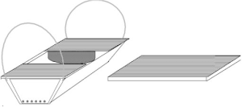 |
| Kenya Top Bar Hive (KTBH) with suspension wires |
| (c) Apiconsult
|
Major disadvantage
- Combs are cut during harvesting, and bees have to make new combs after each harvest. This leaves the bee-keeper with considerations of making a 'fair share' with the bees, and harvest at time of flowering, which still allow the bees to build up combs and honey to times with more scarcity in the surroundings in terms of honey and nectar.
| The Kenya top bar hive |
| .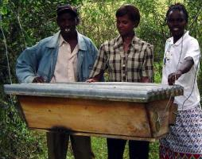 |
| The Kenya Top Bar Hive (KTBH) was developed in Kenya and is now used around the world |
| (c) Thomas Carroll, Kenya (2006)
|
| Working with bees in a KTBH |
| .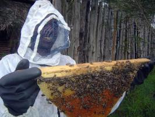 |
| Notice one comb per top bar, which allows modern bee management by the ability to move combs without breaking them |
| (c) Thomas Carroll, Kenya (2006)
|
Frame Hives (FH): Example, Langstroth Hives
This hive is named after its inventor L.L. Langstroth. The hive consists of precision-made rectangular boxes which fit one on top of the other. It has at least two boxes (supers) with the lower chamber called the brood chamber.
Between the brood chamber and the super sometimes a queen excluder is placed. It limits egg laying activity of the queen to the brood chamber only. The wooden frames are "wired" and complemented with a sheet of wax foundation. Each box contains a set of framed combs. During harvesting the frames are removed and put into a extracting machine, which removes the honey leaving the combs intact. The combs are then returned into the hive for reuse by the bees.
Other standard hives exist, besides the Langstroth hives, for example the Dadant hive.
The race of the kept bees, financial means as well as available woodworking equipment are all more important than the dimension of the hive box. However, bee space is critical. Bees require this space between the sides of each frame and the walls of the hive. The bees space for most African Apis mellifera is 6 mm (1/4inch). Without attention to the proper bee space, beekeeping will be difficult, because the bees will be building burr combs.
| 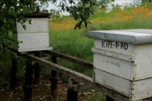 |
| Langstroth hives |
| (c) P. Luethi, Biovision
|
Advantages
- The wax comb is fixed within a frame facilitating and maximizing harvesting and the added strength means less chance of damage to combs during removal from the hive and extraction.of honey. - The strength of the frame/comb allows the hive to be transported even on rough roads, and so the beekeepers can cash in on the pollination market or move bees to another area when forage is short. In organic agriculture, moving of bees over distances should be kept at a minimum, due to reasons given in the section above about organic agriculture and bee keeping.
- The whole honey supers can be harvested without disturbance of the brood box below. - Standardization of parts makes for much easier large-scale and commercial operation.
- Honey can be extracted by means of a centrifugal extractor and empty combs returned to the hive where they will be reused and refilled. This maximizes the honey harvest.
| 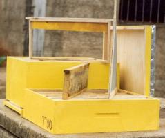 |
| Langstroth hive with frame |
| (c) AIRC, Kenya
|
Disadvantages
- There are few local craftsmen who have the skill, equipment and precision to consistently make parts that fit exactly and are compatible with each other time after time.
- The need to keep a supply of spare frames and supers for use at appropriate times is an expensive investment.
- In order to capitalise on the frames, a centrifugal extractor is essential. This is difficult to make and has to be purchased from a commercial supplier.
| 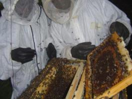 |
| The Langstroth hive: inspecting frames |
| (c) Thomas Carroll, Kenya (2006)
|
Equipment
Most of the equipment needed for small-scale bee-keeping can be made at village level. It can be helpful to import basic equipment to serve as prototypes for local manufacturers. For practicing on a large scale, some specialized equipment will probably need to be bought such as honey gates, special filtering gauze, and gauges to determine honey quality.
| 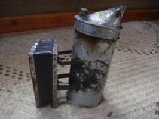 |
| Local smoker |
| (c) S. Fontana, Biovision
|
| 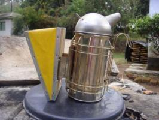 |
| Imported smoker (from the USA) |
| (c) S. Fontana, Biovision
|
A beekeeper uses a smoker to produce cool smoke to calm the bees. The smoker consists of a fuel box containing smoldering fuel (for example dried cow dung, cardboard, dried bark or grass) with a bellows attached. The bee keeper puffs a little smoke near the entrance of the hive before it is opened, and gently smokes the bees to move them from one part of the hive to another.
| 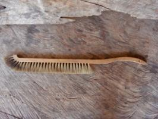 |
| Bee brush |
| (c) S. Fontana, Biovision
|
Bee brush
The bee brush is for brushing bees from combs when harvesting honey or when it is necessary to gently remove bees. Using a feather is also a good alternative.
| 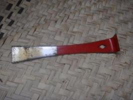 |
| Hive tool |
| (c) S. Fontana, Biovision
|
Hive tools
The hive tool is a handy piece of metal which is used to pry open supers, scrape off odd bits of bees wax, separate frame-ends from their supports and so on. They can be made from pieces of flat steel, and screwdrivers are often used. It is possible to use an old knife for the job but knife blades tend to be too flexible and give too little leverage.
| 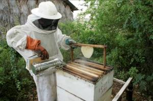 |
| Protective clothing for beekeepers |
| (c) P. Luethi, Biovision
|
Protective clothing
Good protective clothing gives beginner beekeepers confidence, but more experienced beekeepers find that too much protective clothing makes it difficult to work sufficiently gently with bees, and it is very hot to wear. Always wear white or light coloured clothing when working with bees - they are much more likely to sting dark coloured clothing. It is most important to protect the face, especially the eyes and mouth. A broad rimmed hat with some veiling will be good enough. Individual items of clothing must be impermeable to bee stings, and every joint between them must be bee tight. Rubber bands can prevent bees from crawling up trouser legs or shirt sleeves. Some people find that a good way to protect their hands is to put a plastic bag over each hand, secured at the wrist with a rubber band.
How to set up and maintain a good apiary
Quality honey starts with a good apiary. An apiary is a place where small groups of beehives are kept. A good way to begin beekeeping, especially in Africa, is to bait an empty hive to attract a swarm. Set up a hive and either rub it inside with some bees wax or lavender (plant leaves) to give it an attractive smell, or leave some attractive food for the bees. Granulated sugar or cassava powder will work. You could also put some honey on the top of the top bars. The bees will not be able to get at it and take it away to another hive, but the scent will remain and attract them. This will only be successful in areas where there are still plenty of honey bee colonies. Another option is to transfer a colony from the wild into the hive. The wild colony will already have a number of combs and these can be carefully tied on to the top bars of the hive, making sure that you include the brood combs and the queen. One of the best ways to get started in beekeeping is with the assistance of a experienced local bee keeper.
The following steps are necessary in starting a good apiary:
Step 1: Site selection
- Easy to access
- Away from human activity and noise
- Safe from thieves
- Near a place where bees can find water
- Near flowers, and trees that produce flowers
- Protected from strong sun and winds
- Usually a place that is not useful for other activities such as crop farming
Step 2: Site Preparation
- Clear obstacles and vegetation around hives to allow easy movement
- Protect against unwanted visitors such as thieves and large animals
- Plant nectar-producing plants to provide forage
Step 3: Placing the hives: Things to observe
- If you decide to use stands they should be at least 1 metre high. They must be made of strong, termite resistant wood, so they will last. Live stands will not rot and you can use types of wood that will grow easily into new plants when stuck in the ground. Otherwise, the legs of stands must be covered with grease or put in tins of oil so ants cannot climb into the hive.
- Use suspension wires if honey badgers are a danger. The wires need to be well greased to keep ants away. The suspension wires must allow the hive to swing easily to keep animals away.
- Hang hives at least 1 metre from the ground.
- Leave enough space (10-20 m for scutellata bees) between hives to make it easy to work without disturbing bees in other hives.
- Make sure the hive entrances face away from footpaths.
- Limit the number of hives.
Step 4: Hive Preparation and Maintenance
The hives need to be clean and to contain a good bait to attract honeybee swarms to live there
| 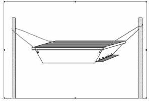 |
|
| Hanging a KTBH posts 2 meters apart and the hive 1 metre from the ground
|
Step 5: Inspection (only for Langstroth and Top Bar - Hives)
Hive inspection should be done at least once a month in order to get acquainted with your bees. This will enable you to know:
 Hive inspection (c) Mette Vaarst, Biovision
|
This is normally done through keeping a work-plan
|
Step 6: Inspect inside the hives to see if:
- The bees are building combs correctly (one comb on one top bar);
- The queen is laying enough eggs;
- The brood nest has a closed brood area without too many empty cells in between
- There are any leakages of water;
- There are intruders like ants, beetles or spiders;
- There are diseases harming the bees.
Step 7: Harvesting the combs
Harvesting of the honey should be carried out in the evenings or early mornings. Gentleness is the key to successful colony manipulation, so learn to carry out this process swiftly but calmly to avoid upsetting your bees.
- Put on your full protective clothing
- Get your smoker, brush or quill, knife or hive tool and a rust-proof container in which to put the honey combs
- Load your smoker, and puff some smoke gently around the hive for a few minutes. Wait a few more minutes, then puff smoke around the entry holes.
- After puffing the smoke open the lid
- Use the knife or hive tool to remove the first bar from the end of the hive
- Puff smoke gently into the gap to drive the bees to the other side of the hive.
- Start removing the bars one by one, until you get the first comb which will be white and new. It may be empty or it may contain some unripened honey. Replace it and leave the comb for the bees to develop.
- Remove only the capped or partly capped combs, which will be quite heavy. Use a brush or feather to sweep any bees back into the hive.
- Cut off the comb, leaving about 2 cm for the bees to start building up again. Put the comb in your container and replace the top bar.
- Carry on harvesting until you come across a brood comb which will be dark in colour and contain pollen too. Leave this honey for the bees.
- Start the process at the other end of the hive.
- Close the hive carefully, replacing the lid
Step 8: After harvesting
Feed the bees if necessary with sugar syrup of a good quality to:
- build/strengthen new colonies.
- sustain starving colonies during drought.
- stimulate brood rearing before honey flow.
If bees have absconded:
- Harvest all the combs to reclaim the wax.
- Clean dirt and debris out of the hives.
- Re-wax the top bars and replace them inside the clean hive.
The management of bee-hives and bees
Support the bees
Bees need a supply of food and water to live, and during dry periods the beekeeper may have to supplement these natural resources. As a general rule, attempts to begin beekeeping should start with the area's existing bees, techniques and equipment, which will all have been adapted for the local circumstances.
Seasonal management
Depending on many factors in environment, climate and weather, the bees behave differently and react to their surroundings in different ways. As bee-keeper, the following behavioural aspects of bees will influence how the bee-keeper will manage them:
This is a natural way by which bee colonies multiply their numbers. About half of the colony leaves the hive together with the old queen. Overcrowding in the hive normally causes swarming.
Signs of swarming:
i. Increased number of bees at the hive entrance.
ii. Increased number of drones
iii. Presence of swarm cells along the edge of the combs.
iv. Increased defensiveness
Control:
i. Provide ample space in the hive by either dividing the colony or harvesting some of the combs.
ii. Decrease overheating by providing some shade.
iii. Destroy the queen cells so as to stop the emerging of new queens.
This is an abrupt departure from the hive by the whole colony
Causes:
i. Physical disturbance of the hive e.g. poor harvesting methods, attacks by honey badgers, ants, termites etc
ii. Presence of pests e.g. insects, spiders, ants
iii. Bad odour
iv. Starvation
The colony does not take time to prepare, hence there are remnants of food, brood, eggs etc.
Control:
Proper management e.g. proper harvesting, handling of bees, proper hanging of hives, clearing the apiary and greasing the wires.
This is a natural phenomenon whereby a colony moves from one habitat to another mainly due to unfavourable weather conditions. Nothing is left behind in terms of brood or food reserves. Migrating bees seasonally follow well-established routes.
Control:
Feed bees in times of food shortage.
This is the replacement of a failing queen by the bees.
Signs:
i. Irregular egg laying pattern
ii. Weak colony
iii. Queen cells on the comb surface
Period caused by:
- Prolonged dry spells, heavy rains or cold weather
What to do:
- Provide shade, feed colonies, provide water, provide protection for wind but still allowing the space for the bees to fly in.
Build up period:
- Start of forage and egg laying
- Colony increases
What to do:
- Regular inspection
- Remove old black combs
- Unite queenless colonies
Predators and pests and their control
During the last two decades there has been a tremendous increase in the spread of bee diseases around the world. This has been brought about by the movement of honey bee colonies and sharing of beekeeping equipment. There are few remaining regions without introduced honey bee diseases, and as a rule used beekeeping equipment should not be imported.
Honey bee colonies, or even single queen bees, must never be moved from one area to another without expert consideration of the consequences. See the section in the introduction about bee-keeping and organic agriculture.
There are numerous pests that will disrupt a beehive and prey on your bees. Wax moths are almost universal, ants are very common and persistent hazard, and honey badgers a serious nuisance in Africa. It is best to talk to other local beekeepers about what the most common problems are and take their advice about appropriate defences.The major bee pests and predators that affect the performance and production of honey bee colonies are:
Pests Control
Termites, ants Greasing suspension wires
Clearing the vegetation beneath and around the hives
Hive beetles Use the right size of entrance holes
Maintain a strong colony
Inspection and physical removal
Wax moth Strengthen colonies by feeding and destroying infested combs
Sugar ants Greasing of suspension wires
Cleaning the apiary
Pirate wasp Strong colonies
Honey badger Wasp trap
High hive hanging method
Honey and beeswax harvesting and processing
Honey is harvested at the end of a flowering season. It can be considered more fair to the bees to harvest it a bit before, especially in hives where the whole comb is removed, to allow the bees to re-establish the comb and collect more honey for themselves. Under all circumstances, the beekeeper selects those combs which contain ripe honey, covered with a fine layer of white beeswax. These combs are usually the outer ones. Combs containing any pollen or brood should be left undisturbed. Honey will keep a long time if it is clean and sealed in an airtight container, but will deteriorate rapidly and ferment if it has absorbed water. Preventing this from happening is crucial in honey harvesting.
The principal idea in harvesting honey is identifying the comb with ripe honey, free it of bees and take it away for processing. This entails shaking the bees off the combs, young bees normally cling on the comb therefore they are brushed off using a bee brush.
- Processing eliminates all foreign particles and dirt from honey.
- Warming (not over 40degC) honey during processing destroys yeast which cause fermentation (but only if the honey contains juice from crushed bees or bee larvae). (Do not overheat the honey on the open fire)
- Warming honey delays crystallisation.
- Processing adds value and therefore honey fetches more money.
The honey comb can be simply cut into pieces and sold as fresh cut comb honey. Alternatively, the honey and comb can be separated and sold as fresh honey and beeswax. It is important when processing honey to remember that it is hygroscopic i.e. will absorb moisture, so all honey processing equipment must be perfectly dry.
Squeezing the honey out by hand
The most common traditional methods of honey extraction are squeezing or melting the combs. Melting the honeycomb is wasteful and makes the quality of both the wax and the honey inferior; it should be avoided. If your quantity of honey or financial resources are small, then squeezing the honey out by hand is probably the most viable option. Honey combs should be scraped with a knife or fork on both sides to open the capping of the cells, then left to drain through a fine dry sterilized muslin cloth into a clean container. Make sure there are no crushed bees or bee larvae among the honey combs, as this reduces the quality.
Honey combs cut from a KTBH or Log hive can be strained with a straining net as illustrated
The honey extracted by this method will have to be strained through several increasingly finer meshes to remove any bits of wax or debris, ending with something like muslin cloth. It is very important that this procedure be carried out hygienically, and that the honey is not left exposed to the air, where it will pick up moisture and deteriorate.
With a Langstroth hive one can use the bee escape (clearer board). Fix the bee escape between the brood box and the super. After 24-48 hrs all the bees will be cleared off the honey supers. The supers can then be removed for honey extraction. Ensure the clearer board is removed and the supers replaced with empty ones.
 Uncapping honey from a frame comb |
|
|
Extractor
Another good way of extracting honey from top-bar or movable frame hives is to use a radial or tangential extractor after slicing of the wax that caps the cells. This is a cylindrical container with a centrally-mounted fitting to support combs or frames of uncapped honey, and a mechanism to rotate the fitting (and the combs) at speed. The honey is thrown out against the side of the container and runs down to the bottom, where it is collected and then drained off with a tap. Most manufactured extractors are made to hold frames and have to be adapted to take the cut comb pieces from top bar hives. This is usually done by making wire baskets to hold the comb. The baskets can either lie flat horizontally, or be attached to the vertical frames and sit tangentially within the container. Top-bar combs in tangential extractors have to be spun twice, once on each side, to extract all the honey.
| 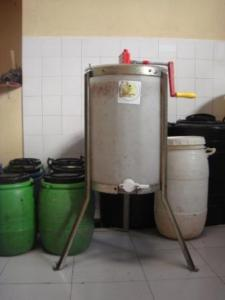 |
| Manual extractor (Centrifuge |
| (c) S. Fontana, Biovision
|
| 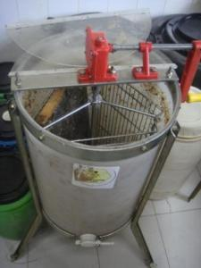 |
| Manual extractor |
| (c) S. Fontana, Biovision
|
Store the honey in glass jars or plastics buckets with well-sealed lids or in a metal container which is coated with a layer of food grade varnish. In humid areas the honey must be stored in airtight containers to prevent water absorption and consequent fermentation within a few days after extraction. If you want to sell your honey you should add a label describing the source of the honey (for example sunflower, mixed blossom, tree honey), the country and district it was produced in, the net weight and your name and address.
The comb from which bees build their nest is made of beeswax. After the honey has been removed from the combs, the beeswax has to be extracted. This is to save it from destruction from the wax moth.
Put the wax into an open container which sits in a water bath. Bring the water to a boil and skim off any debris floating on top. Afterwards pour the liquid wax through a fine filter for a final clean.
| 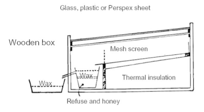 |
| Solar wax melter |
| (c) Practical Action
|
Another option for processing the wax is a solar wax melter. This appliance is easy to make and consists of a wooden box with a galvanised metal shelf with a spout, a bowl or container that sits under the spout, and a glass or plastic cover. When placed in the sun the temperature inside the box will melt down a comb and the wax will flow into a container inside the box. Any honey that was left in the combs will sink to the bottom; it is usually used for cooking or beer making as its taste is spoiled somewhat by this process.
Beeswax does not deteriorate with age and therefore beekeepers often save their scraps of beeswax until they have a sufficiently large amount to sell. Many beekeepers still discard beeswax, unaware of its value. Beeswax is a valuable commodity with many uses in traditional societies: it is used in the lost-wax method of brass casting, as a waterproofing agent for strengthening leather and cotton strings, in batik, in the manufacture of candles, for making polish, and in various hair and skin ointments. Beeswax is also in demand on the world market. Beeswax for export should be clean and have been re-heated as little as possible.
Before you can put the beeswax on the shelf for the purpose of selling it you must prepare it well having the following general requirements in mind.
- The colour of beeswax varies from whitish yellow to yellowish brown. This will depend on the type of combs one used when making the beeswax.
- Beeswax should be free from organic matters such as bees, brood, debris, sand or any other undesirable materials.
- It should not be adulterated by blending it with other types of wax such as paraffin wax, synthetic wax or any types of oil or fat (animal or vegetable).

Uses of wax
(c) Mette Vaarst, Biovision
Once beeswax has been extracted from the combs, the beeswax cake maybe remoulded into desired shape. There is a high demand for beeswax for making candles.
Procedure:
Melt the piece of beeswax using a water-bath (indirectly), quickly pass the molten wax through a clean cotton cloth, the desired mould (smeared with detergent solution) should be ready to receive this wax. Let it cool for several hours. Remove and clean the beeswax cake with a soft damp cotton cloth.
Honey is a major ingredient used in the preparation of various products that are of benefit to the human body. It is also used as a sweetener in various recipes.
Bee products and description of their use
| 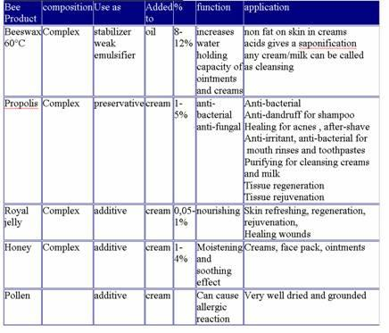 |
| Table: bee products and description of their use
|
Simple bee product recipes
The following recipes were popular on a bee product training course of Apiconsult conducted in Somalia. Ingredients are generally available in Kenya. Be innovative where something is missing and experiment with what is at hand. Many bee farmers in Kenya make additional income making and selling simple beeswax based creams which are reputed to have medicinal properties. Add value and make more money from your beekeeping!
There are many possibilities such as dipped, moulded, balloon shell, scented, engraved and herb candles
When old leather such as belts, gloves and shoes become hard. This formula softens leather and makes it waterproof.
- 30g beeswax
- 240g of petroleum jelly
Melt the ingredients in a double pan. Brush the hot mixture onto the leather and allow it to penetrate. If possible place the item in the hot sun to allow the mixture to penetrate the leather. Polish the leather with a cloth to remove excess waterproofing.
This finish protects floors and outside timber which have not been painted and where paint is not desired.
- 60 g of beeswax
- 1 litre of linseed oil
Melt the beeswax and stir in the oil. Apply the mixture with a brush.
- 1 Tablespoon of Shredded Beeswax
- 1 Tablespoon of Petroleum Jelly
- 1 Teaspoon of Honey
- 1 Tablespoon of Lanolin
- 3 to 4 Drops of Essential Oil
Melt the wax lanolin and petroleum jelly in a double pan. Add the honey and essential oil. Stir the mixture until it cools.
- 1 part honey
- 2 parts petroleum jelly
Combine the ingredients. Honey has well documented healing properties.
- 75 g of beeswax
- 120 g of anhydrous lanolin
- 2/3 cup of baby oil
- 3/4 cup of water
- 1 teaspoon of borax (sodium borate, C. P.)
- Fragrant essential oil (optional)
Chemically pure borax is sold in a pharmacy. Lanolin can also be purchased there. In a double pan melt the oil beeswax and lanolin to about 70 degrees centigrade. Melt the borax and water in a separate container to the same temperature. Add the water mixture to the oil mixture while stirring briskly. When white cream forms stir slowly until the mixture cools to 38 degrees centigrade. Pour into small wide mouth jars.
Petrolium Jelly is easy to make and is an ingredient in many other products. Naturalists preferring not to use petrolium products may use a natural oil instead of the mineral oil such as coconut oil, olive oil, corn oil etc to give an "un-petrolium jelly"
- 30 g of beeswax
- 1/2 cup baby or mineral oil
Melt the ingredients in a water bath. Remove the mixture from the heat and stir until it cools.
(c)www.apiconsult.com
Information Sources
- Agricultural Information Centre Documentation Unit, Ministry of Agriculture, Kenya
- Adjare, S. O. (1990). Beekeeping in Africa. FAO Agricultural Services Bulletin 68/6, Food and Agriculture Organisation of the United Nations Rome, ISBN 92-5-102794-3. www.fao.org
- Adjare, S.O. (1984). The Golden Insect. A handbook on beekeeping for beginners. Practical Action Publisher. ISBN-10: 0946688605 / ISBN-13: 978-0946688609
- Apiconsult Box 3354 Nairobi Kenya, Email: info@apiconsult.com www.apiconsult.com
- Bees for development publishes the 'Bees for Development Journal'. A highly recommended publication for beekeeping in developing countries www.beesfordevelopment.org
- Carroll, Thomas (2006). A Beginner's Guide to Beekeeping in Kenya. Legacy Books, Nairobi, Kenya. ISBN: 9966-7078-6-7
- Hepburn, H.R., Radloff, S.E. (1998). Honeybees of Africa. Springer Verlag. ISBN-10: 3540642218 / ISBN-13: 978-3540642213
- Patersen, P. D. (2006). Beekeeping. The tropical Agriculturalist. CTA/IBRA/Macmillan, Wageningen. ISBN-13: 978-0-333-60084-9.
- Practical Action: Technical Brief: Beekeeping. Appropriate Technology Journal Vol 20 No 4, March 1994, Brief No 7. www.practicalaction.org/practicalanswers
- Segeren, P. (2004). Beekeeping in the tropics. Agrodok 32. Agromisa Foundation. ISBN: 90-77073-57-4 www.journeytoforever.org
- Winston, M. L. (1991). The Biology of the Honey Bee. Harvard University Press. ISBN-10: 0674074092 / ISBN-13: 978-0674074095.
- www.agromisa.org
- www.researchinformation.co.uk
Beekeeping and honey processing equipment
- KENYA
African Beekeepers Ltd (Nairobi)
Tel. 020 551834
e-mail: ernest@coverkraft.com
Honeycare Africa (Nairobi)
Tel: 020-3874448/50
e-mail: info@honeycareafrica.com
Michael (Nairobi) for bee hives only
Tel. 0722 787252
Bee's Wealth (Nairobi-Naivasha Highway)
Tel. 0722 781200 / 0722 830751 / 0721 843417
Peter Kroll (Nakuru)
Agent for Graze
Tel. 0721 388135
Kerio Valley Development Authority KVDA (Eldoret)
Tel. 053 20 633614
e-mail: kvda@kenyaweb.com
Manor House Agricultural Centre (Kitale)
e-mail: mhac@africaonline.co.ke
Icipe (Nairobi)
Tel. 020 8632000
e-mail: emuli@icipe.org
EUROPE
Switzerland
Bienen Meier
e-mail: bestbiene@bienen-meier.ch / info@bienen-meier.ch
Germany
Graze
e-mail: info@graze.org
Austria
Puff
e-mail:biene@puff.co.at
Contact Links
- Apiconsult, Box 3354 Nairobi Kenya, Phone +254-733-716948, Email: info@apiconsult.com
Website: www.apiconsult.com